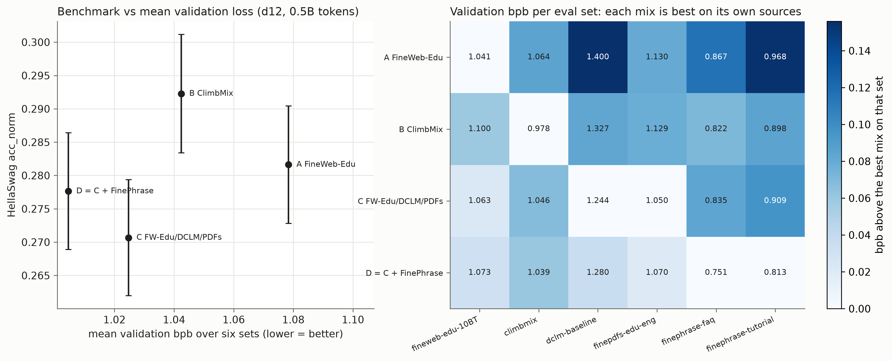
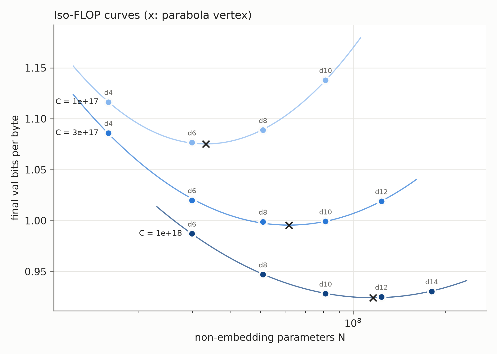
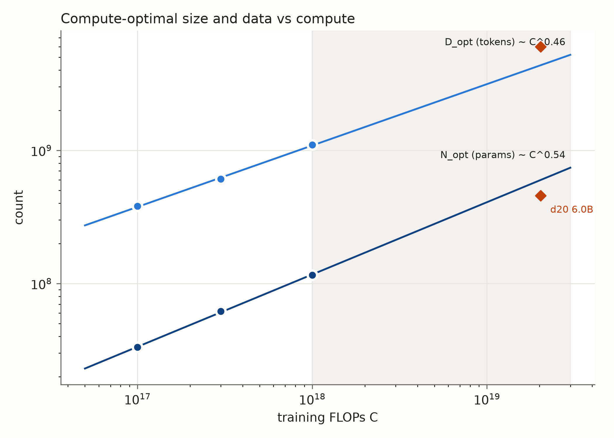
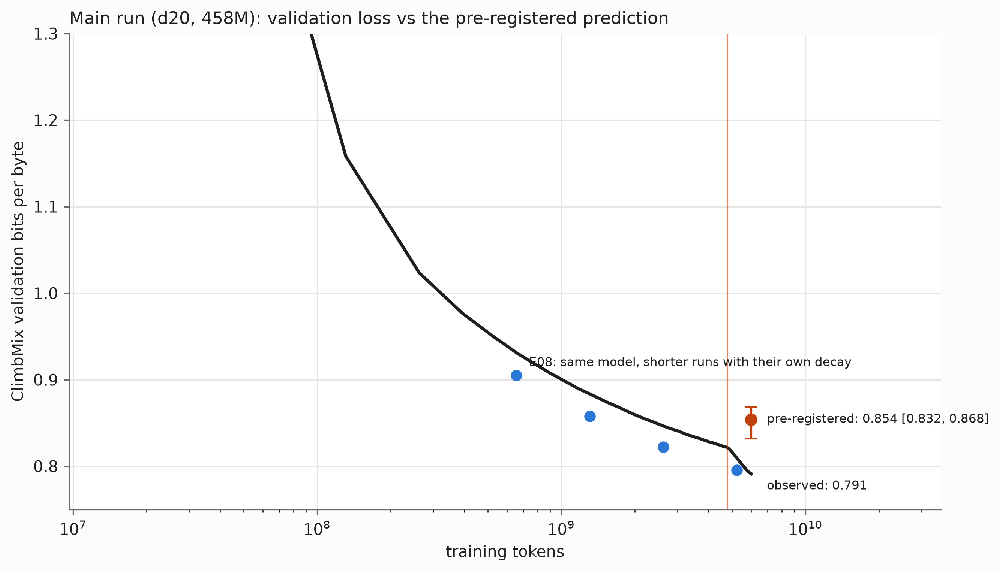
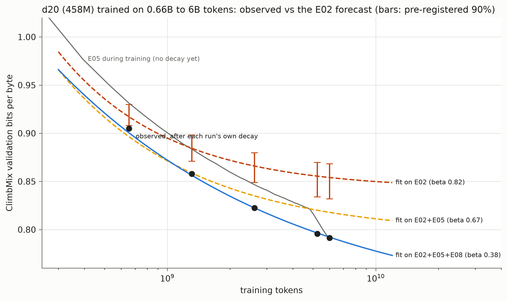
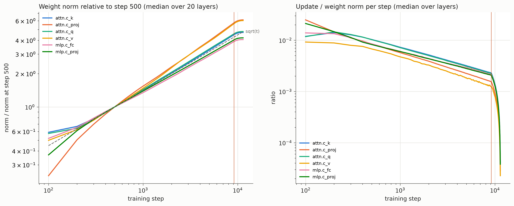

With the availability of two small GPUs available I wanted to train a small GPT from scratch to get a better understanding of the training dynamics and the things that actually matter in practice. In particular, before launching a long training run, I wanted to spend a bit of time on tuning the hyperparameters and exploring different optimizer settings.
The model eventually had 500M parameters and was trained on 6B tokens. The main run took 15h hours on two RTX PRO 6000 Blackwell cards. It produced reasonably fluent English, answered some factual questions, and was quite hopeless at several tasks that looked considerably easier. More on this in a subsequent post where I’ll try to look into the model and understand its inner workings.
The prediction was less successful. Before starting the main run, I fitted a scaling law and a 90% confidence interval for the expected validation loss – I was quite significantly wrong and this led to a second set of experiments.
What is being trained?
I used the GPT-2 tokenizer with 50257 tokens, a context window of 2,048 tokens, and trained with the standard cross-entropy objective \[ \mathcal L(\theta) =-\frac{1}{T}\sum_{t=1}^T\log p_\theta(x_t\mid x_{<t}). \]
It can be useful to express the loss in bits per byte. With natural logarithms, the loss is measured in nats per token. Dividing by \(\log 2\) converts nats into bits; dividing again by the average number of bytes per token gives
\[ \operatorname{bpb} =\frac{\mathcal{L} / \log 2}{\text{average bytes per token}}. \]
The code uses the byte-to-token ratio of each corpus for this normalization. It is an estimate of a coding rate: a model that assigns larger probabilities to the observed text would allow that text to be encoded with fewer bits. This connects language modelling to the compression experiments in the information-theory notes. It also avoids treating one token of source code as if it necessarily contained the same amount of text as one token of English prose. It does not make different validation corpora interchangeable. Predicting a repetitive FAQ collection and predicting a heterogeneous web crawl remain different statistical problems.
At the end of the run, the held-out ClimbMix loss was \(2.533\) nats per token, or \(0.7914\) bpb. This means, for example, that on average each byte of the text can be encoded with about \(0.7914\) bits using the model’s predictions. A totally useless model predicting each byte uniformly at random over the 50257 tokens would need about \(\log_2(50257) / 4.62 \approx 3.4\) bpb.
A transformer small enough to inspect
The implementation starts from nanoGPT, with several choices borrowed from nanochat. The model is a relatively standard decoder only transformer and has one main size parameter, its depth \(d\). The hidden width is chosen as \(h=64d\), and each attention head has fixed dimension 128. Thus the main model, with \(d=20\), has width 1,280 and ten heads per layer.
There is a small accounting detail that matters for the scaling plots. The main model has approximately 393.2M parameters in the transformer blocks, 64.4M in the output matrix, and another 64.4M in the input embedding. I use \(N=458\text{M}\) to denote the number of parameters for the blocks plus the output matrix, and 522M for the total. The input embedding is a lookup, whereas the output matrix participates in a large matrix multiplication at every position. Excluding the former is convenient for estimating training compute. It also means that a statement such as “ten tokens per parameter” needs its counting convention attached to it.
| Main-run quantity | Value |
|---|---|
| Layers / hidden width / attention heads | 20 / 1,280 / 10 |
| Total / compute-counted parameters | 522M / 458M |
| Context length | 2,048 tokens |
| Tokens per optimizer step | 524,288 |
| Optimizer steps | 11,444 |
| Training token presentations | 6.0B |
| Training time / wall time including in-run evaluations | 15.0 h / 15.6 h |
| Throughput | 111,000 tokens/s |
| Reported training throughput per GPU | approximately 188 TFLOP/s |
The two cards each have 96 GB of memory and a 300 W power cap, so about 300 x 2 x 15 = 9kWh (about S$2.5) for the GPUs for the entire training run, which probably amounts to less than S$5 in total. Memory capacity was not the limiting factor at the chosen batch size. A benchmark with larger microbatches approached 88 GB per card; using 16 sequences per card left more room. Gradients were accumulated over eight microbatches before each update. Increasing the model depth from 18 to 22 reduced tokens per second, but the estimated arithmetic throughput remained close to 188 TFLOP/s per card. Smaller models used the hardware less efficiently. This will matter when comparing a compute budget with a time budget.
Choosing the text
The training data selection is crucial for model performance and nowadays there are quite a few good-quality datasets available for training language models. Before choosing the final model size, I trained four smaller models on different data mixtures. Each had depth 12, about 124M parameters, and received 0.5B training tokens.
The candidates were FineWeb-Edu, ClimbMix, a mixture of FineWeb-Edu, DCLM and FinePDFs-Edu, and the same mixture with half of its tokens replaced by FinePhrase FAQ and tutorial rephrasings.
How should these models be compared? One possibility is to average their validation losses over several held-out corpora. Another is to test whether they assign higher probability to correct answers in multiple-choice tasks. Standard benchmarks include HellaSwag, which asks for a plausible continuation of a description, and ARC-Easy, a collection of science questions (Zellers et al. 2019; Clark et al. 2018). Each candidate answer is scored as a continuation of the prompt. For HellaSwag I report the version that divides the answer log probability by its length in bytes; for ARC-Easy I report the score using the summed log probability. The model is not asked to generate the letter “A” or “B”.
| Training data | HellaSwag | ARC-Easy | Mean validation bpb |
|---|---|---|---|
| FineWeb-Edu | 0.282 | 0.471 | 1.078 |
| ClimbMix | 0.292 | 0.494 | 1.042 |
| FineWeb-Edu / DCLM / FinePDFs-Edu | 0.271 | 0.453 | 1.025 |
| Same mixture, with 50% FinePhrase | 0.278 | 0.480 | 1.005 |
The lowest average validation loss did not identify the strongest benchmark model. ClimbMix won both benchmarks but came third by average validation loss. Adding FinePhrase improved all the reported benchmark scores relative to the three-source mixture, although each comparison used only one seed.

ClimbMix was selected for the subsequent runs. The available training pool contained about 8.35B tokens, with separate held-out data. The model received random windows sampled from this pool.
Spending a fixed amount of compute
In order to make best use of the available compute, one must balance the model size and the number of training tokens. In our case, a common approximation of the training cost is
\[ \text{Cost}=D\big(6N+12dTh\big), \]
where \(d\) is the number of layers, \(T=2048\) the context length and \(h\) the hidden width, \(N\) the number of parameters, and \(D\) the number of training tokens. At a fixed \(\text{Cost}\), a larger model sees fewer tokens. A small model cannot use all the information in the data (lack of capacity), whereas a sufficiently large model receives too few updates to exploit its capacity. One therefore expects a sweet spot. To find it, I used three budgets,
\[ C\in\{10^{17},\; 3\times10^{17},\; 10^{18}\}, \]
and model depths from \(d=4\) to \(d=14\), keeping the combinations with reasonable token-to-parameter ratios. This gave fourteen runs, with parameter counts from approximately 16M to 180M.

All three budgets had an interior minimum and fitting a parabola in \(\log N\) around each curve gave optimal parameter counts of approximately 33M, 62M and 116M. This means that the associated token-to-parameter ratios were 11.5, 9.9 and 9.5. In other words, about ten tokens per parameter was a reasonable allocation. Also, note that the optimum was quite flat around the minimum so we do not need to be super precise in choosing the model size to remain near-optimal.
A scaling law, and what its exponents mean
Following (Hoffmann et al. 2022), we can fit the validation loss with a function of the form
\[ L(N,D)=E+\frac{A}{N^\alpha}+\frac{B}{D^\beta}, \qquad A,B,\alpha,\beta>0. \]
The two power-law terms describe the improvement from increasing the model size and the amount of training data; \(E\) is the limiting loss predicted by the fit. Fitting the five constants to the fourteen runs gave \(\alpha\approx0.75\), \(\beta\approx0.82\) and \(E\approx0.823\) bpb.
How should the model size grow when more compute becomes available? Using the approximation \(C\approx6ND\), we can substitute \(D=C/(6N)\) into the fitted loss and minimize over \(N\). This gives
\[ N_{\rm opt}\propto C^{\beta/(\alpha+\beta)}, \qquad D_{\rm opt}\propto C^{\alpha/(\alpha+\beta)}. \]
Since the two fitted exponents are close, both quantities grow approximately like \(\sqrt C\). In other words, with four times more compute, we should roughly double the model size and double the number of training tokens. This also explains the approximately constant token-to-parameter ratio observed above.

Interestingly, the constant \(E\) disappears when minimizing over \(N\). Choosing a good model size therefore does not require an accurate estimate of the limiting loss. Predicting the final loss of a much larger run is another matter, as I was about to find out.
The prediction fails
For the main run, I chose the depth-20 model with 458M compute-counted parameters and 6B training tokens. This was close to the predicted optimum, and the loss curve was flat enough that the precise choice mattered little. The run used about twenty times more compute than the largest experiment in the initial sweep.
Before launching it, I recorded a predicted validation loss of \(0.854\) bpb, with a 90% bootstrap interval of \([0.832,0.868]\). The observed loss was \(0.7914\) bpb, substantially better than expected!

This was much too large a discrepancy to explain by the fluctuations seen in repeated small runs, which were around \(0.001\) bpb. More strikingly, the final loss was below the fitted floor \(E=0.823\). Since both power-law terms are positive, the fitted formula says that this result is impossible, regardless of the model size or training duration.
The difficulty is that a slowly decreasing term can look almost constant over a limited range of observations. Some of the improvement that would become visible in a longer run can then be absorbed into the estimated floor. The bootstrap interval describes uncertainty within the fitted model; it does not account for the formula becoming inaccurate when extrapolated far beyond the small experiments.
Does the model benefit more from additional data?
The main run increased both model size and training duration. To separate their effects, I used saved checkpoints to produce four shorter runs of the same depth-20 model, with budgets ranging from about 0.65B to 5.24B tokens. Each ended with the same proportion of learning-rate decay as the main run. This gave a comparison in which only the training duration changed, although the runs shared their initial training history.

At the shortest duration, the original prediction was fairly close: \(0.917\) bpb predicted versus \(0.905\) observed. By 5.24B tokens, the gap had grown to about \(0.060\) bpb. Simply lowering the fitted floor would not fix this: the model was benefiting more from additional data than the shape of the original curve allowed.
Refitting with the longer runs lowered the data exponent from about \(0.82\) to \(0.38\) and the floor from \(0.82\) to \(0.63\). A smaller data exponent allows the data term to remain relevant over longer training durations. The other coefficients changed too, and the fit to the original small runs became worse. So I would be reluctant to attach much significance to the new parameter values. A single power law was struggling to describe both ranges.
The small sweep gave a reasonable way to allocate the compute budget. Predicting the final loss twenty times further along required a much stronger extrapolation, and that prediction failed. It would be interesting to repeat the duration experiment at another model size to see how much of the discrepancy is specific to this model.
Reducing the learning rate
The learning rate was held constant for most of training, then decreased linearly to zero over the final 20%. During this last portion, the validation loss fell from about \(0.822\) to \(0.791\) bpb, while HellaSwag accuracy increased from \(42.1\%\) to \(44.9\%\) and ARC-Easy from \(63.0\%\) to \(66.2\%\).
Of course, the model also received more training data during this period. To isolate the effect of the schedule, we can compare the shorter runs with the main trajectory after the same number of tokens. For the first three shorter runs, the main trajectory was still using its constant learning rate. Finishing with a decay reduced the loss by about \(0.025\) bpb in each case, a substantial gain at this scale.
With a constant learning rate, noisy gradient updates keep moving the parameters around even near a good solution. Smaller steps can reduce these fluctuations towards the end of training. This also matters when fitting a scaling law: the loss halfway through a long run can be noticeably higher than the final loss of a shorter run trained on the same number of tokens, because the latter has already reduced its learning rate.
Muon and growing weight norms
For most weight matrices I used Muon, which approximately orthogonalizes the matrix updates. The embeddings and output matrix used AdamW. On a smaller, 124M-parameter model, replacing Muon with AdamW increased the loss from about \(0.925\) to \(0.959\) bpb at the same training budget, even after trying several AdamW learning rates. This gave a good reason to retain Muon for the main run, although the comparison covered only one model size and a limited amount of tuning.
One curious feature of the run was that, without weight decay on these matrices, their norms kept growing approximately like the square root of the number of updates.

This behavior is consistent with updates of roughly constant magnitude that are approximately orthogonal to the current weights: each update adds a roughly constant amount to the squared norm. Consequently, a constant learning rate can still give progressively smaller relative changes,
\[ \frac{\lVert\Delta W_t\rVert}{\lVert W_t\rVert}\propto t^{-1/2}. \]
The growing norms therefore introduce a kind of implicit decrease in the relative step size, even before the explicit learning-rate decay. This describes the geometry of the parameter updates; the effect on predictions also depends on the network’s normalization operations.
Would weight decay help? In the smaller-model experiments, adding it reduced typical matrix norms by a factor of about 2.6, but changed the final loss by only \(0.002\) bpb. That is too small to draw a strong conclusion from these single-run comparisons. At least here, large weight norms were compatible with good predictive performance, and shrinking them did not produce a clear improvement.
The final model could continue a story, recognize many grammatical contrasts, and recall some facts. It also confidently gave \(7+5=10\). In Part II, I return to the saved checkpoints to look at how these behaviors appeared while the loss was going down.